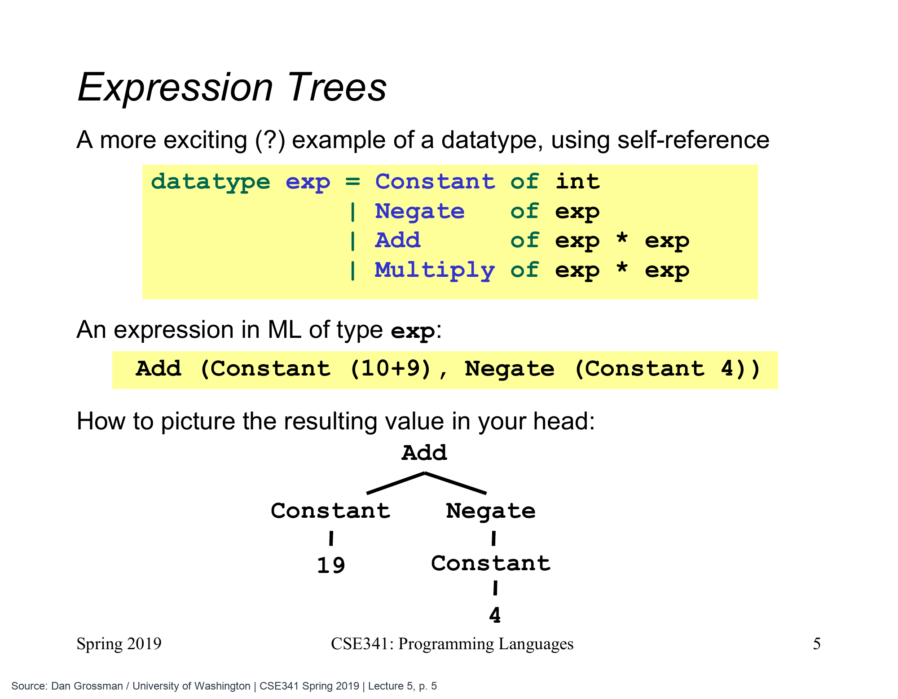

把算式保存成数据，再决定怎样处理它
前两篇已经能构造带标记的数据，并按标记选择分支。现在想做一个小计算器：先保存“2 加上 3 与 4 的乘积”，稍后再求出 14。还希望同一份算式可以拿来数加号、找最大的常量，而不是保存时就只剩一个整数 14。
字符串 "2+3*4" 也能保存文字，但我们还没学怎样把字符串拆成算式。原课采用更直接的办法：让每一种运算都有一种数据形状，运算里面放更小的算式。下面的 Constant 保存整数，Negate 表示取负，Add、Multiply 分别连接两个子算式。
datatype exp = Constant of int
| Negate of exp
| Add of exp * exp
| Multiply of exp * exp;
val calculation = Add (Constant 2,
Multiply (Constant 3, Constant 4));
val example_exp = Add (Constant (10+9), Negate (Constant 4));calculation 是一棵根为 Add 的树：左边是常量 2，右边是一个乘法节点，乘法里面再放常量 3、4。这里不需要猜运算符优先级；谁在谁里面，已经由数据结构明确决定。
example_exp 是原课的另一棵树。ML 构造它时，会先把普通表达式 10+9 算成 19，最后得到 Add (Constant 19, Negate (Constant 4)) 这个 exp 类型的值。这时并没有自动得到 15；Add、Negate 是我们定义的构造器，不是 ML 的加法与取负运算符。

原图构造的是 Add (Constant (10+9), Negate (Constant 4))。构造时，10+9 先得到 19，但 Add、Negate、Constant 仍组成一棵树；这份树形数据并不会自行变成 15。只有后面定义的 eval 沿树求值，才得到 19−4=15。本文的 2+3×4 使用相同的数据规则，具体数字和树形不同。
Dan Grossman / University of Washington, CSE341 Spring 2019 · Lecture 5 slides 第 5 页 · 点击图片看大图
为什么定义里还能再次写 exp
定义 Negate of exp 时，一个表达式里面又能保存另一个表达式；Add of exp * exp 则保存一对子表达式。这就是第一篇提到的自引用。每个位置仍然有明确类型：Negate 4 不成立，因为它需要的是 exp，应该写成 Negate (Constant 4)。
自引用没有规定每棵树必须有几层。常量是不用再往下拆的叶子；取负有一个子节点，加法和乘法各有两个子节点。我们构造的有限树最终会走到常量，因此可以像第一周的列表递归一样，先处理更小的部分，再组合答案。
求值函数：每种节点对应一条处理办法
现在写出真正计算整数的 eval。它输入一棵 exp 树，返回这棵树表示的整数；下面沿用本篇前面的数据类型与两个算式。
fun eval e =
case e of
Constant i => i
| Negate e2 => ~ (eval e2)
| Add (e1,e2) => eval e1 + eval e2
| Multiply (e1,e2) => eval e1 * eval e2;
val calculation_answer = eval calculation;
val example_answer = eval example_exp;
(* calculation_answer = 14；example_answer = 15 *)碰到 Constant i，已经拿到内部整数，直接返回。碰到 Negate e2，e2 仍是一棵树，所以先递归求出它表示的整数，再用 ML 的 ~ 取负。Add 与 Multiply 都递归取得两边的整数，再做 ML 的加法或乘法。
对于原课的树，先求左边 Constant 19 得到 19；右边先从 Constant 4 取得 4，再取负得到 ~4；最后相加为 15。对 calculation，右边先得到 3*4=12，根节点再做 2+12=14。
一棵 exp 树怎样交回整数14
先确认构造的结果仍是一棵树，再跟着 eval 从子树取得整数。箭头向下表示继续处理子树，向上表示已经算好的整数交回外层。
第 1 / 6 步先构造树，还没求算术答案
datatype exp = Constant of int | Negate of exp| Add of exp * exp | Multiply of exp * exp;fun eval e =case e ofConstant i => i| Negate e2 => ~ (eval e2)| Add(e1,e2) => eval e1 + eval e2| Multiply(e1,e2) => eval e1 * eval e2;val calculation = Add(Constant 2, Multiply(Constant 3, Constant 4));val answer = eval calculation;
数据类型与函数规则已经定义。Add和Multiply只是构造标记，calculation现在保存完整结构，不会自动变成14。
此刻的结果calculation : exp
一次看完整过程（也可用于打印）
第 1 / 6 步先构造树，还没求算术答案
datatype exp = Constant of int | Negate of exp| Add of exp * exp | Multiply of exp * exp;fun eval e =case e ofConstant i => i| Negate e2 => ~ (eval e2)| Add(e1,e2) => eval e1 + eval e2| Multiply(e1,e2) => eval e1 * eval e2;val calculation = Add(Constant 2, Multiply(Constant 3, Constant 4));val answer = eval calculation;
数据类型与函数规则已经定义。Add和Multiply只是构造标记，calculation现在保存完整结构，不会自动变成14。
此刻的结果calculation : exp
第 2 / 6 步根是 Add，需要左右两个整数
datatype exp = Constant of int | Negate of exp| Add of exp * exp | Multiply of exp * exp;fun eval e =case e ofConstant i => i| Negate e2 => ~ (eval e2)| Add(e1,e2) => eval e1 + eval e2| Multiply(e1,e2) => eval e1 * eval e2;val calculation = Add(Constant 2, Multiply(Constant 3, Constant 4));val answer = eval calculation;
eval匹配根的Add，把左右两棵子树交给e1、e2。根的加法要等两边递归结果，暂时还不能完成。
此刻的结果等待 eval (Constant 2) 与右侧结果
第 3 / 6 步左侧常量直接返回2
datatype exp = Constant of int | Negate of exp| Add of exp * exp | Multiply of exp * exp;fun eval e =case e ofConstant i => i| Negate e2 => ~ (eval e2)| Add(e1,e2) => eval e1 + eval e2| Multiply(e1,e2) => eval e1 * eval e2;val calculation = Add(Constant 2, Multiply(Constant 3, Constant 4));val answer = eval calculation;
左子树匹配Constant i，得到i=2并返回2。这个数字先留给外面的加法，右子树仍是一棵Multiply树。
此刻的结果左侧已得到 2
第 4 / 6 步右侧是乘法，还要处理两个叶子
datatype exp = Constant of int | Negate of exp| Add of exp * exp | Multiply of exp * exp;fun eval e =case e ofConstant i => i| Negate e2 => ~ (eval e2)| Add(e1,e2) => eval e1 + eval e2| Multiply(e1,e2) => eval e1 * eval e2;val calculation = Add(Constant 2, Multiply(Constant 3, Constant 4));val answer = eval calculation;
Multiply分支取出两棵子树Constant 3与Constant 4。两边都要先交回整数，乘法才能执行。
此刻的结果根在等待；当前乘法也在等待
第 5 / 6 步3与4交回，乘法得到12
datatype exp = Constant of int | Negate of exp| Add of exp * exp | Multiply of exp * exp;fun eval e =case e ofConstant i => i| Negate e2 => ~ (eval e2)| Add(e1,e2) => eval e1 + eval e2| Multiply(e1,e2) => eval e1 * eval e2;val calculation = Add(Constant 2, Multiply(Constant 3, Constant 4));val answer = eval calculation;
两个Constant分支分别给出3、4，随后完成3*4=12。右侧交回12，最外层现在已有2与12。
此刻的结果右侧返回 12
第 6 / 6 步根完成加法，返回14
datatype exp = Constant of int | Negate of exp| Add of exp * exp | Multiply of exp * exp;fun eval e =case e ofConstant i => i| Negate e2 => ~ (eval e2)| Add(e1,e2) => eval e1 + eval e2| Multiply(e1,e2) => eval e1 * eval e2;val calculation = Add(Constant 2, Multiply(Constant 3, Constant 4));val answer = eval calculation;
构造值与计算结果分开保留
| 名字 | 类型 | 值 |
|---|---|---|
| calculation | exp | 原来的 Add / Multiply 树 |
| answer | int | 14 |
最外层做2+12得到14，外面的val建立answer。框中文字标记的是eval的中间答案，原来的calculation仍保留树结构，没有被改成整数。
此刻的结果answer = 14 : int
依据课程重绘 · V6 Useful Datatypes
构造树与解释树是两次不同的计算。 前者得到 exp，保留结构；后者调用我们写的 eval，得到 int。这也说明函数为什么常常跟着数据形状递归：数据有一个子树，就递归处理一个；有两个子树，就分别处理两个。
同一棵树，还可以数加号
原课的 number_of_adds 与 eval 都是 exp -> int，但它不计算算式的算术结果。它只计算树里出现了多少个 Add 节点。下面仍沿用已经定义的 exp 和 example_exp。
fun number_of_adds e =
case e of
Constant i => 0
| Negate e2 => number_of_adds e2
| Add (e1,e2) => 1 + number_of_adds e1 + number_of_adds e2
| Multiply (e1,e2) => number_of_adds e1 + number_of_adds e2;
val add_count = number_of_adds (Multiply (example_exp,example_exp));
(* add_count = 2 *)常量本身没有加号，取负也不新增加号。Add 要把两个子树的数量相加，再加上自己这一个；Multiply 也需要查看两个子树，但不能给自己加一。两个 example_exp 各有一个 Add，所以根是乘法的这棵树共有两个加号；它的算术结果则是 15*15=225，不是 2。
类似地，可以收集所有常量为列表，或判断是否存在乘法节点。原课用这些任务说明：一份好的数据定义可以服务多个函数，结构不必随着某一种处理目的丢失。
找最大的常量：它不同于求算式的值
V8 继续提出 max_constant：找到树里存着的最大整数常量。原树的答案是 19；即使写成 Negate (Constant 19)，里面保存的常量仍是 19，而不是 ~19。只有 Constant (~19) 才真的保存负十九。
原视频先明确测试的预期，再逐步改进实现。一种初稿会在加法分支里这样写；下面只是分支片段，不是完整程序：
Add (e1,e2) =>
if max_constant e1 > max_constant e2
then max_constant e1
else max_constant e2它能给出正确数字，却重新落入第一周的陷阱：比较时已经递归过，返回分支又重算一次。先用 let 保存两个结果，就能消除重复；但加法与乘法要做的事情完全相同，复制两段长代码又显得累赘。
原课最后把共同任务放进局部的 max_of_two。下面是完整版本，仍沿用前面的 exp，每棵子树只求一次最大常量。
fun max_constant e =
let
fun max_of_two (e1,e2) =
let val m1 = max_constant e1
val m2 = max_constant e2
in if m1 > m2 then m1 else m2 end
in
case e of
Constant i => i
| Negate e2 => max_constant e2
| Add (e1,e2) => max_of_two (e1,e2)
| Multiply (e1,e2) => max_of_two (e1,e2)
end;
val largest = max_constant example_exp;
(* largest = 19 *)Constant 直接给出它自己的整数；Negate 不改变内部常量，所以继续查看子树；另两种节点都比较左右子树的答案。这里不需要为空树设计特殊整数，因为这份类型没有“空表达式”情况：有限的表达式树最终必有常量叶子。
原课还展示了更短的版本。Int.max 是已有的整数最大值函数，接收整数对并返回较大者；函数实参先求值，所以每个递归调用只出现一次就足够了。
fun max_constant2 e =
case e of
Constant i => i
| Negate e2 => max_constant2 e2
| Add (e1,e2) => Int.max (max_constant2 e1, max_constant2 e2)
| Multiply (e1,e2) => Int.max (max_constant2 e1, max_constant2 e2);
val same_largest = max_constant2 example_exp;
(* same_largest = 19 *)这时共同处理已短成一次 Int.max 调用，不一定还值得为它保留局部辅助函数。原课的重点是跟着代码的实际重复来判断：既避免重算昂贵的递归，也不要把“出现两段相似短代码”一律当成必须再拆函数的理由。
同一种设计方法，还能表示纸牌与学生身份
表达式树展示了自引用。V6 还有两个更简单、却很常用的建模例子。第一种是枚举固定选择：纸牌花色只能是四种之一；牌面则可能是固定人头牌，也可能携带一个数字。
datatype suit = Club | Diamond | Heart | Spade;
datatype rank = Jack | Queen | King | Ace | Num of int;
val a_card = (Spade, Queen);
val another_card = (Heart, Num 7);一张牌同时有花色与牌面，所以类型是 suit * rank，把两种 one-of 数据再用 each-of 组合起来。相比“1 表示梅花、2 表示方块”的隐藏编号，构造器把含义直接写在数据里。不过 Num of int 并未限制数字必须在 2 到 10 之间，Num (~7)、Num 142 仍能通过类型检查；需要这种业务限制时，还要另行检查。
第二种例子是学生身份。如果规定“有学号就只用学号，否则只用姓名识别”，那么两种情况应当二选一。下面 Name 携带名、可选中间名、姓；NONE 表示没有中间名。
datatype id = StudentNum of int
| Name of string * (string option) * string;
val numbered_student = StudentNum 42;
val named_student = Name ("Ada", NONE, "Lovelace");若改成一个始终具有学号、名、中间名、姓的记录，再约定“学号为 ~1 才看姓名”，读代码的人就必须额外记住注释里的规则，类型也帮不上“只能使用一种”的忙。但若真实需求本来就是“姓名一直保留，学号可能缺失”，记录又是正确选择：
val student_details = {student_num = SOME 42,
first = "Ada", middle = (NONE : string option), last = "Lovelace"};这条记录同时有姓名与可选学号，和上面的二选一不是同一个需求。选择数据类型之前，先说清楚数据应该同时拥有哪些部分、又应该在哪些形状之间选择，比先找一个能塞下所有字段的容器更重要。
把这几个例子放回精确规则
V7 总结的规则，现在都能在具体代码里找到：datatype 引入新类型与构造器；带 of t 的构造器接收 t 再构造值，不带 of 的构造器本身就是值。构造器作用于已经求出的数据，整体成为保留标记的值。
case 则先求出 of 前面那个表达式的值，再按顺序找第一个匹配模式，只执行对应右边。模式引入的名字只在该分支可用，携带数据的类型由定义约束；无数据的构造器没有额外内容可取。其他分支也要通过类型检查，并与选中分支具有一致的结果类型。
这里的递归处理适用于我们构造的有限表达式树。它没有让整数变成无限精度，也没有保证所有算术结果都在实现允许的范围内；树的结构处理正确，与整数运算是否溢出，是不同问题。
对应原课与回看线索
本篇对应 Coursera 的 V6 Useful Datatypes、V7 Pattern Matching So Far、V8 Another Expression Example。保留花色/牌面、两种学生信息需求、exp、eval、number_of_adds，以及 max_constant 从重复递归到局部保存、辅助函数、Int.max 的改进过程。2+3*4 是补充例子；原课图中的算式是 19+(-4)。
本系列的 V 编号遵循 Coursera 顺序。UW 2019 视频目录把同主题的 Another Expression Example 放在 Type Synonyms 之后，因此不能直接用 UW 页面中的行数替换这里的编号。